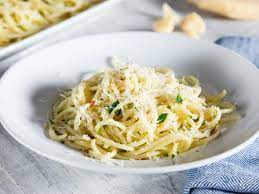

Pasta Aglio e Olio

Pasta with Garlic and Oil
is one of the most simple yet satisfying dishes you can make!
Spaghetti is tossed with olive oil, garlic, lemon juice, parmesan cheese, and crushed red pepper flakes.
Ready in just 15 minutes, this is perfect for a quick meal with minimal effort!
Ingredients
- Pasta
- Olive oil
- Garlic
- Lemon juice
- Parmesan
- Spinach
Steps
- Firstly, boil the pasta per package instructions. (My pasta took about 8 minutes for al dente.) Drain pasta and set aside.
- Secondly, in the pot the pasta was cooked in, add 1 tablespoon olive oil. When the oil is hot, add in the garlic and sauté for one minute.
- Then, add in red pepper flakes and spinach and cook for an additional minute. Return the pasta back to the pan and stir in the rest of the oil and lemon juice.
- Finally, take the pot off of the heat and sprinkle in the parmesan cheese. Season with salt and pepper and serve immediately.
- Enjoy!